Cell type composition analysis
Belinda Phipson
7/17/2019
Last updated: 2019-10-20
Checks: 6 0
Knit directory: Porello-heart-snRNAseq/
This reproducible R Markdown analysis was created with workflowr (version 1.3.0). The Checks tab describes the reproducibility checks that were applied when the results were created. The Past versions tab lists the development history.
Great! Since the R Markdown file has been committed to the Git repository, you know the exact version of the code that produced these results.
Great job! The global environment was empty. Objects defined in the global environment can affect the analysis in your R Markdown file in unknown ways. For reproduciblity it’s best to always run the code in an empty environment.
The command set.seed(20190603) was run prior to running the code in the R Markdown file. Setting a seed ensures that any results that rely on randomness, e.g. subsampling or permutations, are reproducible.
Great job! Recording the operating system, R version, and package versions is critical for reproducibility.
Nice! There were no cached chunks for this analysis, so you can be confident that you successfully produced the results during this run.
Great! You are using Git for version control. Tracking code development and connecting the code version to the results is critical for reproducibility. The version displayed above was the version of the Git repository at the time these results were generated.
Note that you need to be careful to ensure that all relevant files for the analysis have been committed to Git prior to generating the results (you can use wflow_publish or wflow_git_commit). workflowr only checks the R Markdown file, but you know if there are other scripts or data files that it depends on. Below is the status of the Git repository when the results were generated:
Ignored files:
Ignored: .Rhistory
Ignored: .Rproj.user/
Untracked files:
Untracked: analysis/08-ClustEpicardial.Rmd
Untracked: analysis/PBapproachMarker-cardio.Rmd
Untracked: analysis/doublet-detection.Rmd
Untracked: broad_props.csv
Untracked: code/ReadDataObjects.R
Untracked: code/getTransformedProps.R
Untracked: data/adult-clust.txt
Untracked: data/dcm-clust.txt
Untracked: data/fetal-clust.txt
Untracked: data/gstlist-adult.Rdata
Untracked: data/gstlist-dcm-res03.Rdata
Untracked: data/gstlist-dcm.Rdata
Untracked: data/gstlist-fetal.Rdata
Untracked: data/gstlist-young.Rdata
Untracked: data/heart-markers-long.txt
Untracked: data/immune-markers-long.txt
Untracked: data/pseudobulk-pool.Rds
Untracked: data/pseudobulk.Rds
Untracked: data/targets_pools.txt
Untracked: data/young-clust.txt
Untracked: output/AllAdult-clustermarkers-v2.csv
Untracked: output/AllAdult-clustermarkers.csv
Untracked: output/AllFetal-clustermarkers.csv
Untracked: output/AllYoung-clustermarkers.csv
Untracked: output/Alldcm-clustermarkers.csv
Untracked: output/DEAnalysis/
Untracked: output/Figures/
Untracked: output/MarkerAnalysis/
Untracked: output/RDataObjects/
Untracked: output/cardio-numcells-clusters.csv
Untracked: output/cardio-numcells-clusters.txt
Untracked: output/fetal1-clustermarkers.csv
Untracked: output/fetal2-clustermarkers.csv
Untracked: output/fetal3-clustermarkers.csv
Untracked: output/heatmap-top10-adultmarkergenes.pdf
Untracked: output/young1-clustermarkers.csv
Unstaged changes:
Modified: analysis/01-QualityControl.Rmd
Modified: analysis/01a-DEpseudobulk.Rmd
Modified: analysis/02-ClusterFetal.Rmd
Modified: analysis/02c-ClusterFetal3.Rmd
Modified: analysis/03-ClusterYoung.Rmd
Modified: analysis/04-ClusterAdult.Rmd
Modified: analysis/07b-DECardio.Rmd
Note that any generated files, e.g. HTML, png, CSS, etc., are not included in this status report because it is ok for generated content to have uncommitted changes.
These are the previous versions of the R Markdown and HTML files. If you’ve configured a remote Git repository (see ?wflow_git_remote), click on the hyperlinks in the table below to view them.
| File | Version | Author | Date | Message |
|---|---|---|---|---|
| Rmd | 0236c5a | Belinda Phipson | 2019-10-20 | added updated composition analysis |
| html | 971fff9 | Belinda Phipson | 2019-07-26 | Build site. |
| Rmd | 5b0d0d5 | Belinda Phipson | 2019-07-26 | added composition analysis on broad cell types |
Introduction
I’m interested in having a look at the differences in broad cell type composition between the fetal, young, adult and DCM samples.
Load libraries and functions
library(edgeR)
library(RColorBrewer)
library(org.Hs.eg.db)
library(limma)
library(Seurat)
library(monocle)
library(cowplot)
library(DelayedArray)
library(scran)
library(NMF)
library(workflowr)
library(ggplot2)
library(clustree)
library(dplyr)source("/misc/card2-single_cell_nuclei_rnaseq/Porello-heart-snRNAseq/code/normCounts.R")
source("/misc/card2-single_cell_nuclei_rnaseq/Porello-heart-snRNAseq/code/findModes.R")
source("/misc/card2-single_cell_nuclei_rnaseq/Porello-heart-snRNAseq/code/ggplotColors.R")
source("/misc/card2-single_cell_nuclei_rnaseq/Porello-heart-snRNAseq/code/getTransformedProps.R")Read in the data objects
targets <- read.delim("/misc/card2-single_cell_nuclei_rnaseq/Porello-heart-snRNAseq/data/targets.txt",header=TRUE, stringsAsFactors = FALSE)
targets$FileName2 <- paste(targets$FileName,"/",sep="")
targets$Group_ID2 <- gsub("LV_","",targets$Group_ID)
group <- c("Fetal_1","Fetal_2","Fetal_3",
"Young_1","Young_2","Young_3",
"Adult_1","Adult_2","Adult_3",
"Diseased_1","Diseased_2",
"Diseased_3","Diseased_4")
m <- match(group, targets$Group_ID2)
targets <- targets[m,]fetal.integrated <- readRDS(file="./output/RDataObjects/fetal-int.Rds")
load(file="./output/RDataObjects/fetalObjs.Rdata")
young.integrated <- readRDS(file="./output/RDataObjects/young-int.Rds")
load(file="./output/RDataObjects/youngObjs.Rdata")
adult.integrated <- readRDS(file="./output/RDataObjects/adult-int.Rds")
load(file="./output/RDataObjects/adultObjs.Rdata")
dcm.integrated <- readRDS(file="./output/RDataObjects/dcm-int.Rds")
load(file="./output/RDataObjects/dcmObjs.Rdata")Set default clustering resolution
# Default 0.3
Idents(fetal.integrated) <- fetal.integrated$integrated_snn_res.0.3
DimPlot(fetal.integrated, reduction = "tsne",label=TRUE,label.size = 6)+NoLegend()
| Version | Author | Date |
|---|---|---|
| 971fff9 | Belinda Phipson | 2019-07-26 |
# Default 0.3
DimPlot(young.integrated, reduction = "tsne",label=TRUE,label.size = 6)+NoLegend()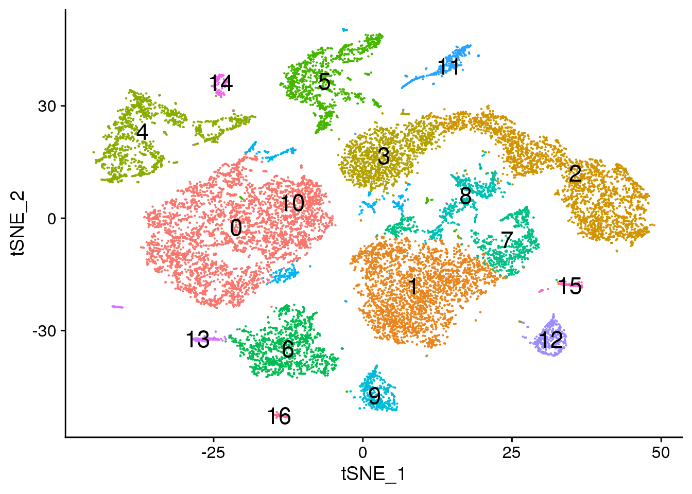
| Version | Author | Date |
|---|---|---|
| 971fff9 | Belinda Phipson | 2019-07-26 |
# Default 0.6
DimPlot(adult.integrated, reduction = "tsne",label=TRUE,label.size = 6)+NoLegend()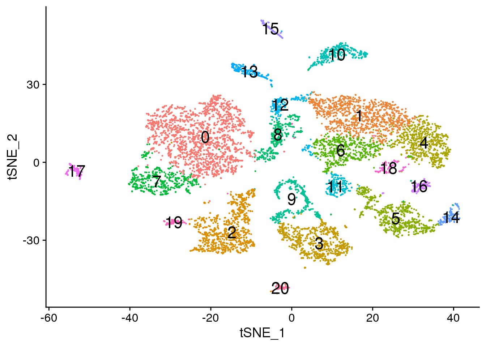
| Version | Author | Date |
|---|---|---|
| 971fff9 | Belinda Phipson | 2019-07-26 |
# Default 0.3
Idents(dcm.integrated) <- dcm.integrated$integrated_snn_res.0.3
DimPlot(dcm.integrated, reduction = "tsne",label=TRUE,label.size = 6)+NoLegend()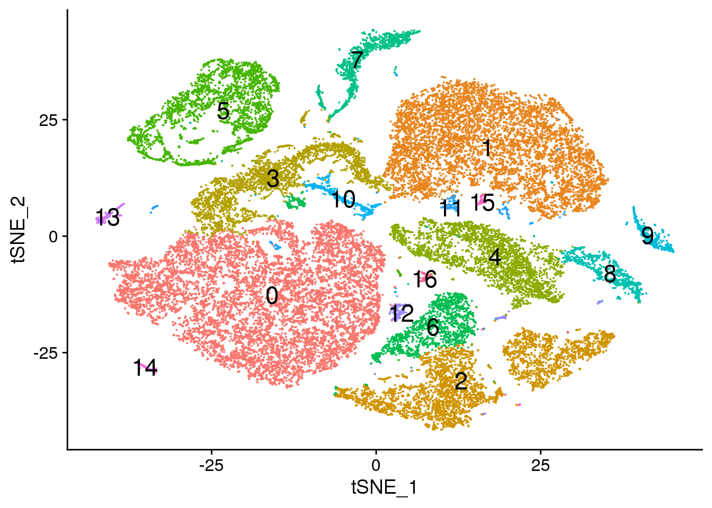
| Version | Author | Date |
|---|---|---|
| 971fff9 | Belinda Phipson | 2019-07-26 |
Assign cell types to clusters
f.clust <- read.delim("data/fetal-clust.txt",header=TRUE,nrow=22,stringsAsFactors = FALSE)
y.clust <- read.delim("data/young-clust.txt",header=TRUE,stringsAsFactors = FALSE)
a.clust <- read.delim("data/adult-clust.txt",header=TRUE,nrow=21,stringsAsFactors = FALSE)
d.clust <- read.delim("data/dcm-clust.txt",header=TRUE,nrow=17,stringsAsFactors = FALSE)
d.clust <- d.clust[,1:3]fetal.annot <- fetal.integrated
new.cluster.ids <- f.clust$Celltype
names(new.cluster.ids) <- levels(fetal.annot)
fetal.annot <- RenameIdents(fetal.annot, new.cluster.ids)
DimPlot(fetal.annot, reduction = "tsne", label = TRUE, pt.size = 0.5) + NoLegend()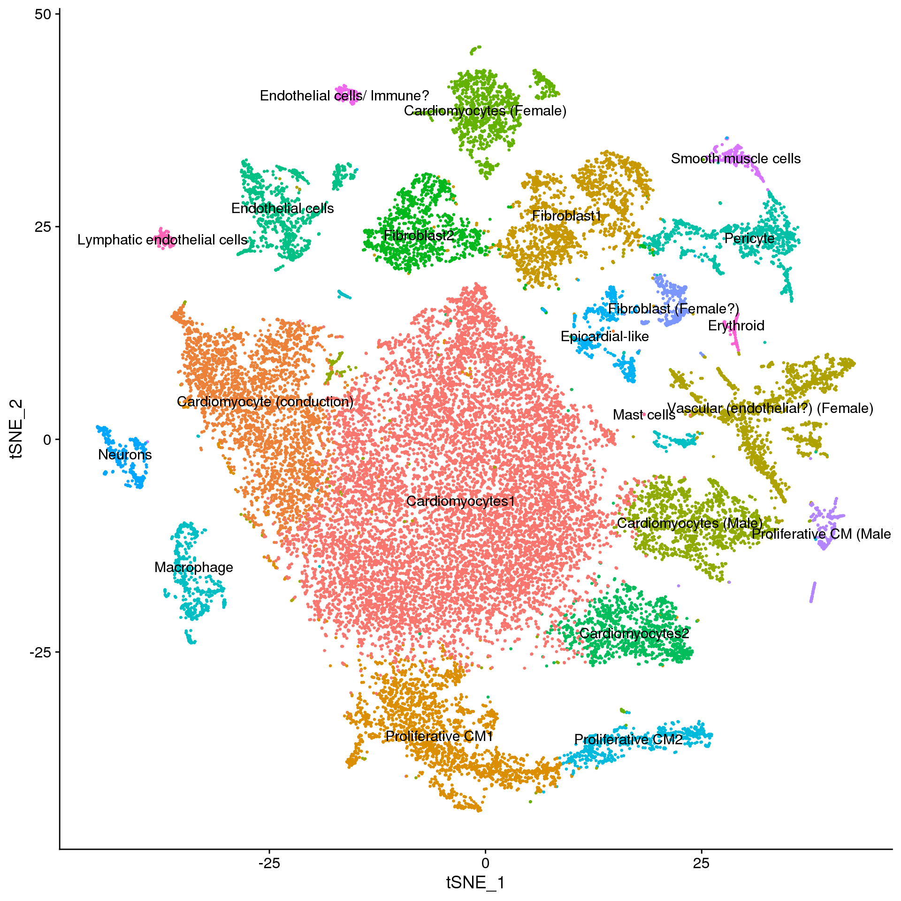
| Version | Author | Date |
|---|---|---|
| 971fff9 | Belinda Phipson | 2019-07-26 |
fetal.broad <- fetal.integrated
broad.cluster.ids <- f.clust$Broad_celltype
names(broad.cluster.ids) <- levels(fetal.broad)
fetal.broad <- RenameIdents(fetal.broad, broad.cluster.ids)
DimPlot(fetal.broad, reduction = "tsne", label = TRUE, pt.size = 0.5, label.size = 6) + NoLegend()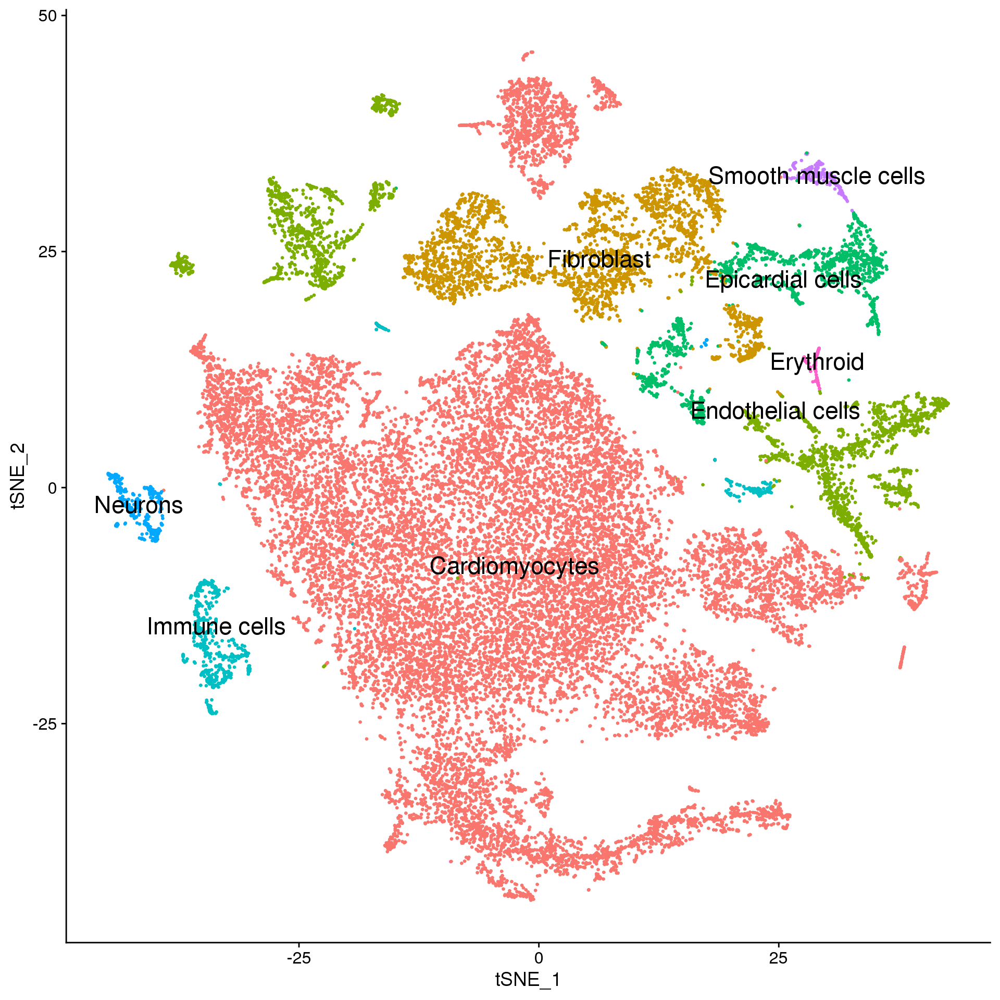
| Version | Author | Date |
|---|---|---|
| 971fff9 | Belinda Phipson | 2019-07-26 |
fetal.integrated$Celltype <- Idents(fetal.annot)
fetal.integrated$Broad_celltype <- Idents(fetal.broad)young.annot <- young.integrated
new.cluster.ids <- y.clust$Celltype
names(new.cluster.ids) <- levels(young.annot)
young.annot <- RenameIdents(young.annot, new.cluster.ids)
DimPlot(young.annot, reduction = "tsne", label = TRUE, pt.size = 0.5) + NoLegend()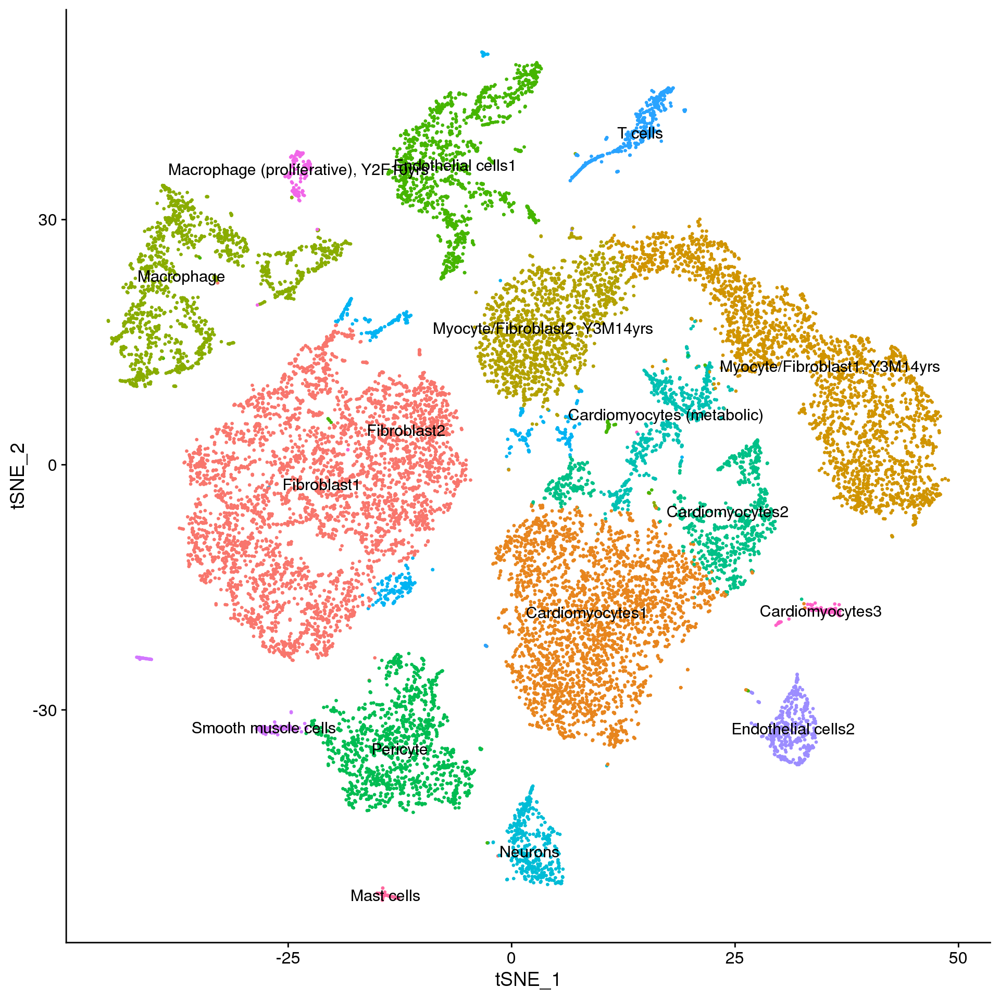
| Version | Author | Date |
|---|---|---|
| 971fff9 | Belinda Phipson | 2019-07-26 |
young.broad <- young.integrated
broad.cluster.ids <- y.clust$Broad_celltype
names(broad.cluster.ids) <- levels(young.broad)
young.broad <- RenameIdents(young.broad, broad.cluster.ids)
DimPlot(young.broad, reduction = "tsne", label = TRUE, pt.size = 0.5, label.size=6) + NoLegend()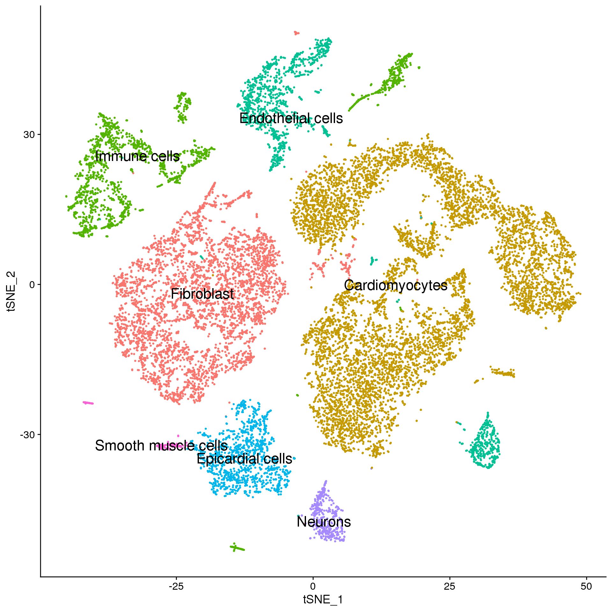
| Version | Author | Date |
|---|---|---|
| 971fff9 | Belinda Phipson | 2019-07-26 |
young.integrated$Celltype <- Idents(young.annot)
young.integrated$Broad_celltype <- Idents(young.broad)adult.annot <- adult.integrated
new.cluster.ids <- a.clust$Celltype
names(new.cluster.ids) <- levels(adult.annot)
adult.annot <- RenameIdents(adult.annot, new.cluster.ids)
DimPlot(adult.annot, reduction = "tsne", label = TRUE, pt.size = 0.5) + NoLegend()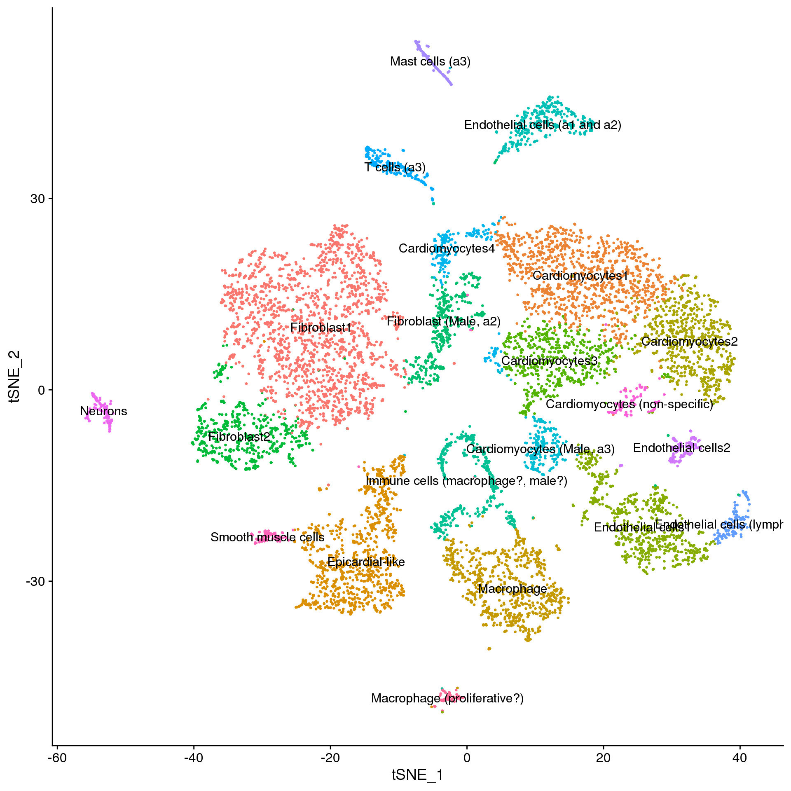
| Version | Author | Date |
|---|---|---|
| 971fff9 | Belinda Phipson | 2019-07-26 |
adult.broad <- adult.integrated
broad.cluster.ids <- a.clust$Broad_celltype
names(broad.cluster.ids) <- levels(adult.broad)
adult.broad <- RenameIdents(adult.broad, broad.cluster.ids)
DimPlot(adult.broad, reduction = "tsne", label = TRUE, pt.size = 0.5, label.size = 6) + NoLegend()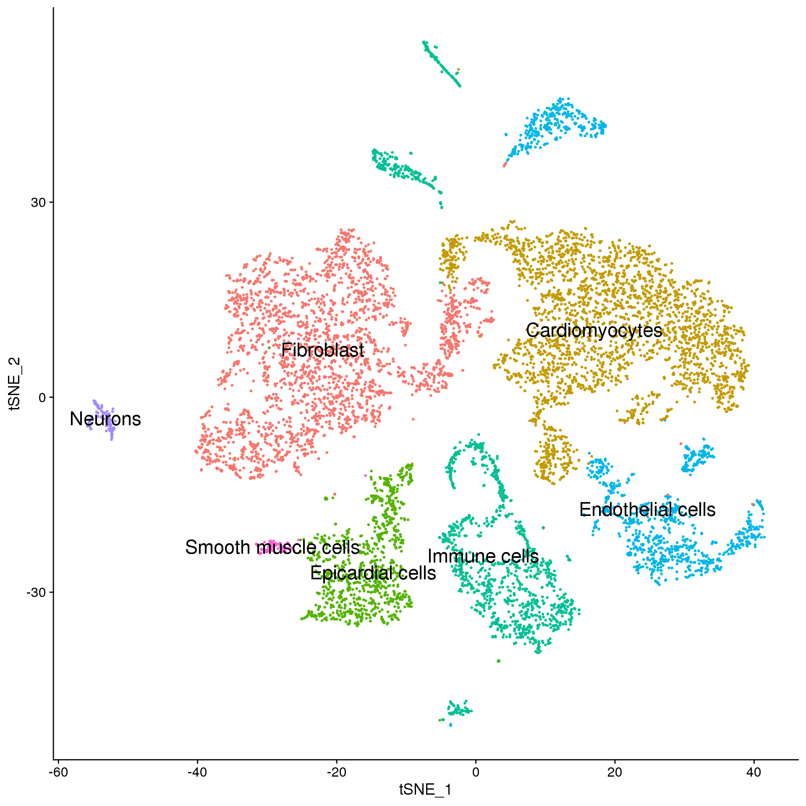
| Version | Author | Date |
|---|---|---|
| 971fff9 | Belinda Phipson | 2019-07-26 |
adult.integrated$Celltype <- Idents(adult.annot)
adult.integrated$Broad_celltype <- Idents(adult.broad)dcm.annot <- dcm.integrated
new.cluster.ids <- d.clust$Celltype
names(new.cluster.ids) <- levels(dcm.annot)
dcm.annot <- RenameIdents(dcm.annot, new.cluster.ids)
DimPlot(dcm.annot, reduction = "tsne", label = TRUE, pt.size = 0.5) + NoLegend()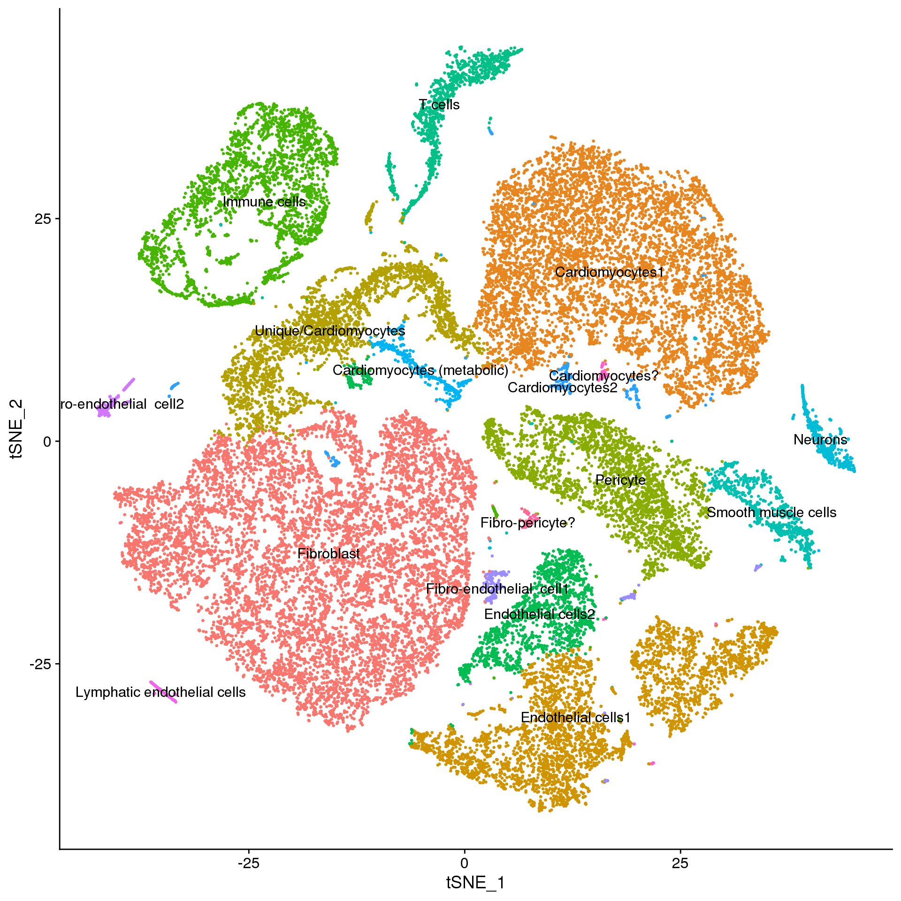
| Version | Author | Date |
|---|---|---|
| 971fff9 | Belinda Phipson | 2019-07-26 |
dcm.broad <- dcm.integrated
broad.cluster.ids <- d.clust$Broad_celltype
names(broad.cluster.ids) <- levels(dcm.broad)
dcm.broad <- RenameIdents(dcm.broad, broad.cluster.ids)
DimPlot(dcm.broad, reduction = "tsne", label = TRUE, pt.size = 0.5, label.size = 6) + NoLegend()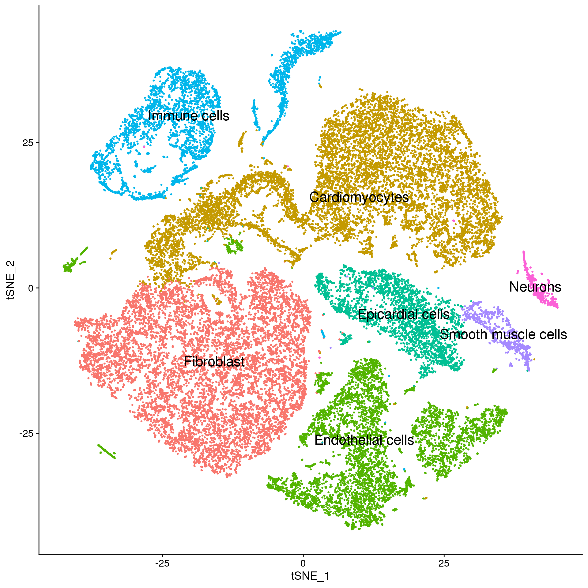
| Version | Author | Date |
|---|---|---|
| 971fff9 | Belinda Phipson | 2019-07-26 |
dcm.integrated$Celltype <- Idents(dcm.annot)
dcm.integrated$Broad_celltype <- Idents(dcm.broad)pdf("./output/Figures/fetal-broad-celltypes-TSNE.pdf",width=7,height=7)
DimPlot(fetal.broad, reduction = "tsne", label = TRUE, pt.size = 0.5) + NoLegend() + ggtitle("Fetal samples")
dev.off()png
2 pdf("./output/Figures/young-broad-celltypes-TSNE.pdf",width=7,height=7)
DimPlot(young.broad, reduction = "tsne", label = TRUE, pt.size = 0.5) + NoLegend() + ggtitle("Young samples")
dev.off()png
2 pdf("./output/Figures/adult-broad-celltypes-TSNE.pdf",width=7,height=7)
DimPlot(adult.broad, reduction = "tsne", label = TRUE, pt.size = 0.5) + NoLegend() + ggtitle("Adult samples")
dev.off()png
2 pdf("./output/Figures/dcm-broad-celltypes-TSNE.pdf",width=7,height=7)
DimPlot(dcm.broad, reduction = "tsne", label = TRUE, pt.size = 0.5) + NoLegend() + ggtitle("DCM samples")
dev.off()png
2 Get data into format for proportions analysis
allcells <- data.frame(Cellname=c(colnames(fetal.integrated),colnames(young.integrated),colnames(adult.integrated),colnames(dcm.integrated)),
Celltype = c(as.character(fetal.integrated$Celltype),as.character(young.integrated$Celltype),as.character(adult.integrated$Celltype),as.character(dcm.integrated$Celltype)),
Broad_celltype=c(as.character(fetal.integrated$Broad_celltype),as.character(young.integrated$Broad_celltype),as.character(adult.integrated$Broad_celltype),as.character(dcm.integrated$Broad_celltype)),
Sample =c(fetal.integrated$biorep,young.integrated$biorep,adult.integrated$biorep,dcm.integrated$biorep),
Group=rep(c("fetal","young","adult","dcm"),c(ncol(fetal.integrated),ncol(young.integrated),ncol(adult.integrated),ncol(dcm.integrated))))
allcells$Group <- factor(allcells$Group,levels=c("fetal","young","adult","dcm"))
cellfreq <- table(allcells$Broad_celltype,allcells$Sample)
props <- t(t(cellfreq)/colSums(cellfreq))
group <- rep(c("adult","dcm","fetal","young"),c(3,4,3,3))
group <- factor(group,levels=c("fetal","young","adult","dcm"))par(mar=c(5,5,2,2))
props.group <- getTransformedProps(allcells$Broad_celltype,allcells$Group)
barplot(props.group$Proportions,col=ggplotColors(8),ylab="Cell type proportions",xlab="Group",cex.axis=1.5,cex.lab=1.5,cex.names = 1.5)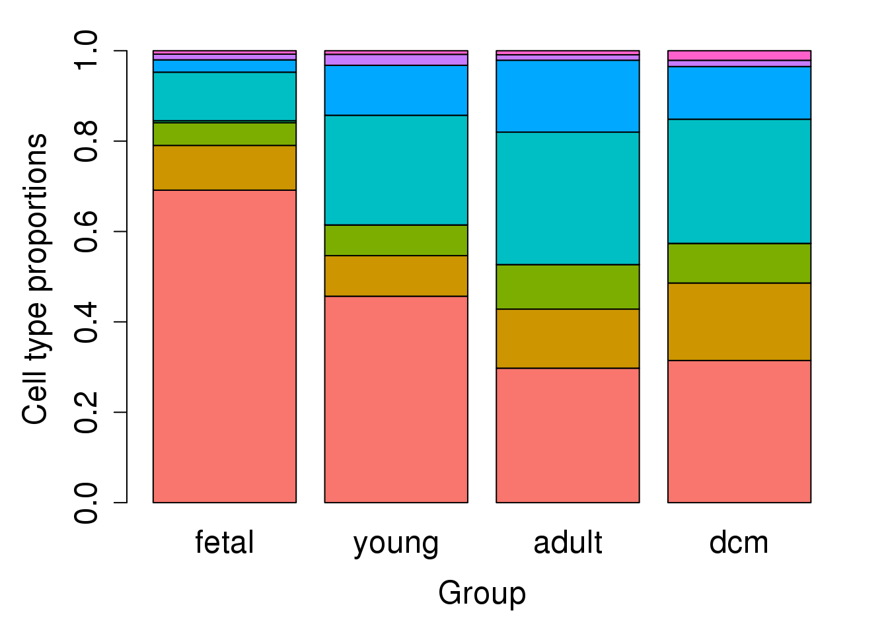
plot.new()
par(mar=c(1,1,1,1))
legend("topleft",legend=levels(allcells$Broad_celltype),fill=ggplotColors(8),cex=2)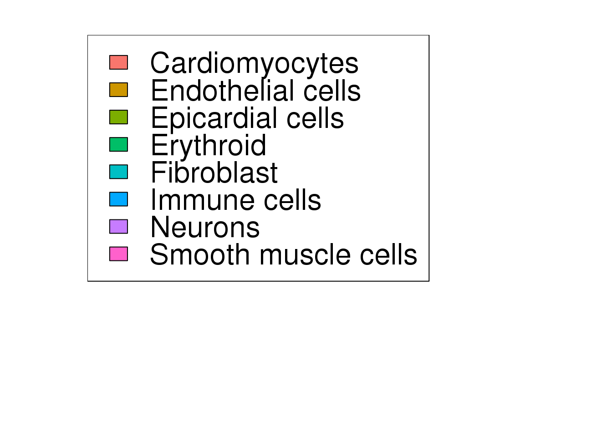
Test differences between groups using prop.table
tab <- table(allcells$Broad_celltype,allcells$Group)
N <- colSums(tab)
pval.classic <- rep(NA,nrow(tab))
names(pval.classic) <- rownames(tab)
for(i in 1:nrow(tab)) pval.classic[i] <- prop.test(tab[i,],N)$p.value
fdr.classic <- p.adjust(pval.classic,method="BH")Test differences between two male samples with prop.table
allcells$Sample <- factor(allcells$Sample,levels=c("f1","f2","f3","y1","y2","y3","a1","a2","a3","d1","d2","d3","d4"))
tabfm <- table(allcells$Broad_celltype,allcells$Sample)
N2 <- colSums(tabfm)
pval.male.classic <- rep(NA,nrow(tabfm))
names(pval.male.classic) <- rownames(tabfm)
for(i in 1:nrow(tabfm)) pval.male.classic[i] <- prop.test(tabfm[i,1:2],N2[1:2])$p.value
fdr.male.classic <- p.adjust(pval.male.classic,method="BH")prop.rep <- getTransformedProps(allcells$Broad_celltype,allcells$Sample)
par(mfrow=c(1,1))
avg.prop <- rowMeans(prop.rep$Proportions[,1:2])
o <- order(avg.prop,decreasing = TRUE)
barplot(t(prop.rep$Proportions[,1:2])[,o],beside=TRUE,las=2,col=ggplotColors(2),ylab="Proportion",cex.axis = 1.5,cex.lab=1.5,cex.names=1.5)
legend("topright",legend=c("Fetal Rep 1","Fetal Rep 2"),fill=ggplotColors(2),cex=1.5)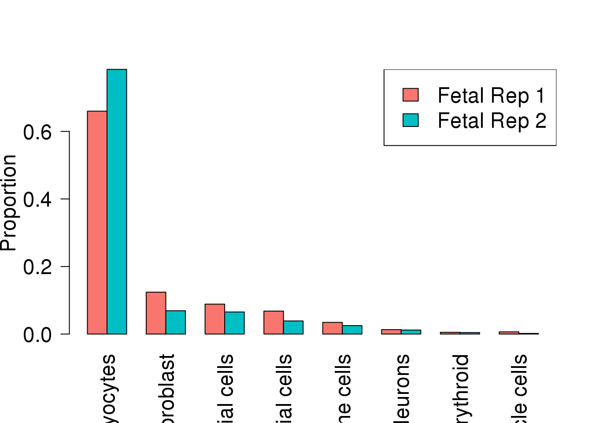
Test for differences using propeller
#allcells$Sample <- factor(allcells$Sample,levels=c("f1","f2","f3","y1","y2","y3","a1","a2","a3","d1","d2","d3","d4"))
barplot(prop.rep$Proportions,col=ggplotColors(8),ylab="Cell type proportions",xlab="Group",cex.axis=1.5,cex.lab=1.5,cex.names = 1.5)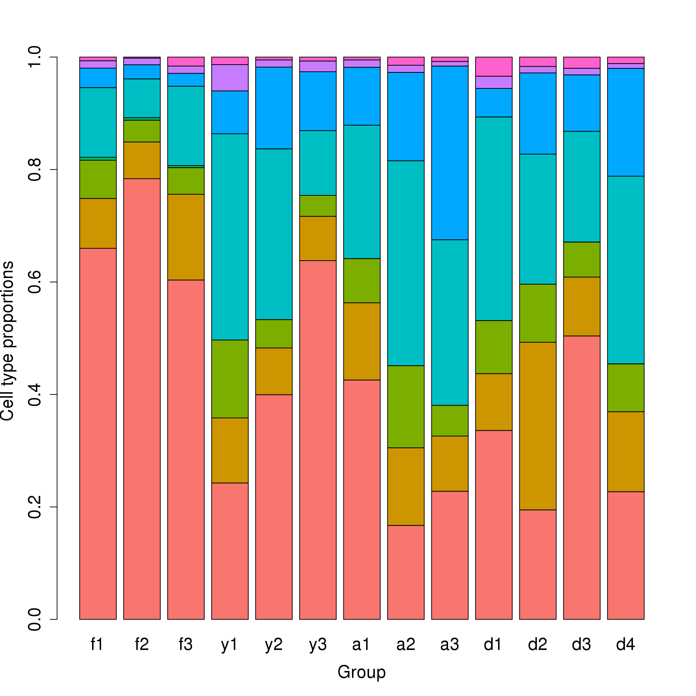
targets$Group <- factor(targets$Group,levels=c("Fetal","Child","Adult","DCM"))
par(mar=c(4,5,2,2))
stripchart(prop.rep$Proportions[3,]~targets$Group,method="jitter",vertical=TRUE,pch=16,col=ggplotColors(4),cex=2,
ylab="Estimated proportions",main=rownames(prop.rep$Proportions)[3], cex.axis=1.5,cex.lab=1.5,cex.main=2)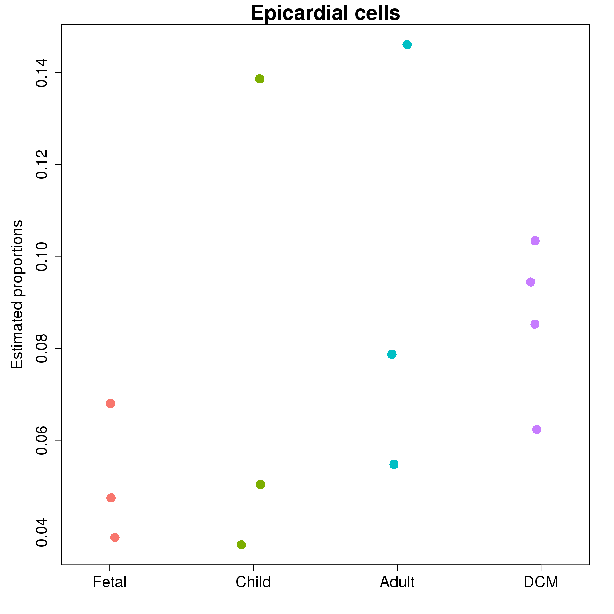
par(mfrow=c(3,3))
for(i in 1:8){
plot(jitter(as.numeric(targets$Group)),prop.rep$Proportions[i,],xaxt="n",xlab="",xlim=c(0.5,4.5),col=ggplotColors(4)[factor(targets$Group)],pch=c(8,16)[factor(targets$Sex)],cex=2,ylab="Estimated proportions",main=rownames(prop.rep$Proportions)[i],cex.axis=1.5,cex.lab=1.5,cex.main=2)
axis(side=1,at = 1:4, labels = levels(targets$Group),cex.axis=1.5)
#legend("topleft",legend=levels(factor(targets$Sex)),pch=c(8,16),cex=1.5)
}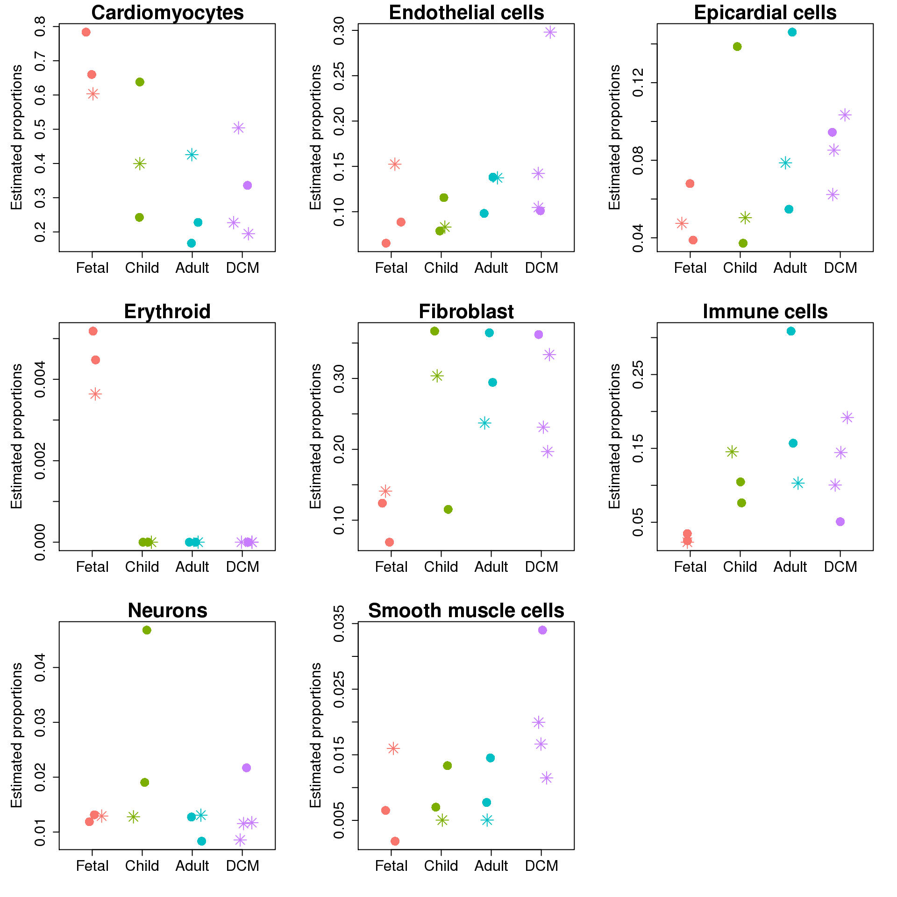
Test for differences in cell type proportions
design <- model.matrix(~targets$Sex + targets$Group)
fit <- lmFit(prop.rep$TransformedProps,design)
fit <- eBayes(fit[,-c(1:2)],trend=TRUE)
summary(decideTests(fit)) targets$GroupChild targets$GroupAdult targets$GroupDCM
Down 1 2 2
NotSig 7 4 3
Up 0 2 3top <- topTable(fit)options(digits = 3)
top targets.GroupChild targets.GroupAdult targets.GroupDCM
Erythroid -0.06646 -0.06646 -0.0655
Immune cells 0.16736 0.27501 0.1744
Smooth muscle cells 0.00681 0.00990 0.0640
Fibroblast 0.19001 0.23991 0.2268
Cardiomyocytes -0.26680 -0.43182 -0.3892
Neurons 0.04394 -0.00629 0.0117
Epicardial cells 0.04012 0.07697 0.0825
Endothelial cells -0.01266 0.03912 0.0586
AveExpr F P.Value adj.P.Val
Erythroid 0.0153 332.087 5.05e-44 4.04e-43
Immune cells 0.3242 4.806 4.02e-03 1.61e-02
Smooth muscle cells 0.1050 4.456 6.11e-03 1.63e-02
Fibroblast 0.5034 4.010 1.04e-02 2.09e-02
Cardiomyocytes 0.6954 3.377 2.25e-02 3.60e-02
Neurons 0.1218 1.464 2.31e-01 3.08e-01
Epicardial cells 0.2757 0.498 6.85e-01 7.01e-01
Endothelial cells 0.3525 0.474 7.01e-01 7.01e-01sig.ct <- rownames(top)
par(mfrow=c(3,3))
for(i in 1:nrow(prop.rep$Proportions)){
stripchart(prop.rep$TransformedProps[sig.ct[i],]~targets$Group,method="jitter",vertical=TRUE,pch=16,col=ggplotColors(4),cex=1.5,
ylab="Asin(sqrt(prop))",main=sig.ct[i])
}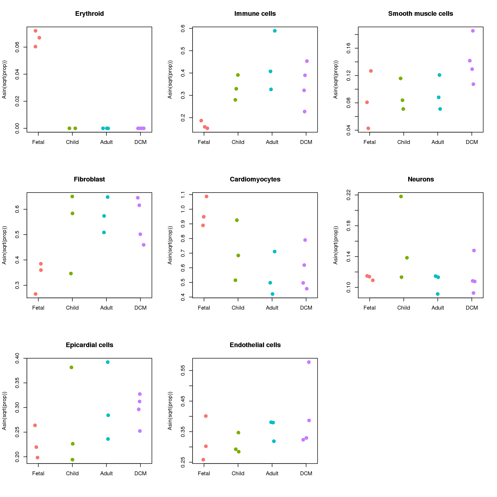
par(mar=c(7,5,3,2))
par(mfrow=c(3,3))
barplot(table(allcells$Broad_celltype)/sum(table(allcells$Broad_celltype)),las=2,main="Background proportions",
col=c(2,"grey","grey",2,2,2,"grey",2),ylab="Proportion",cex.lab=1.5,cex.axis=1.5,cex.main=2)
legend("topright",fill=c(2,"grey"),legend=c("adj.P<0.05","ns"))
par(mar=c(4,5,3,2))
for(i in 1:nrow(prop.rep$Proportions)){
stripchart(prop.rep$Proportions[sig.ct[i],]~targets$Group,method="jitter",vertical=TRUE,pch=16,col=ggplotColors(4),cex=2,
ylab="Estimated proportions",main=sig.ct[i],cex.axis=1.5,cex.lab=1.5,cex.main=2)
}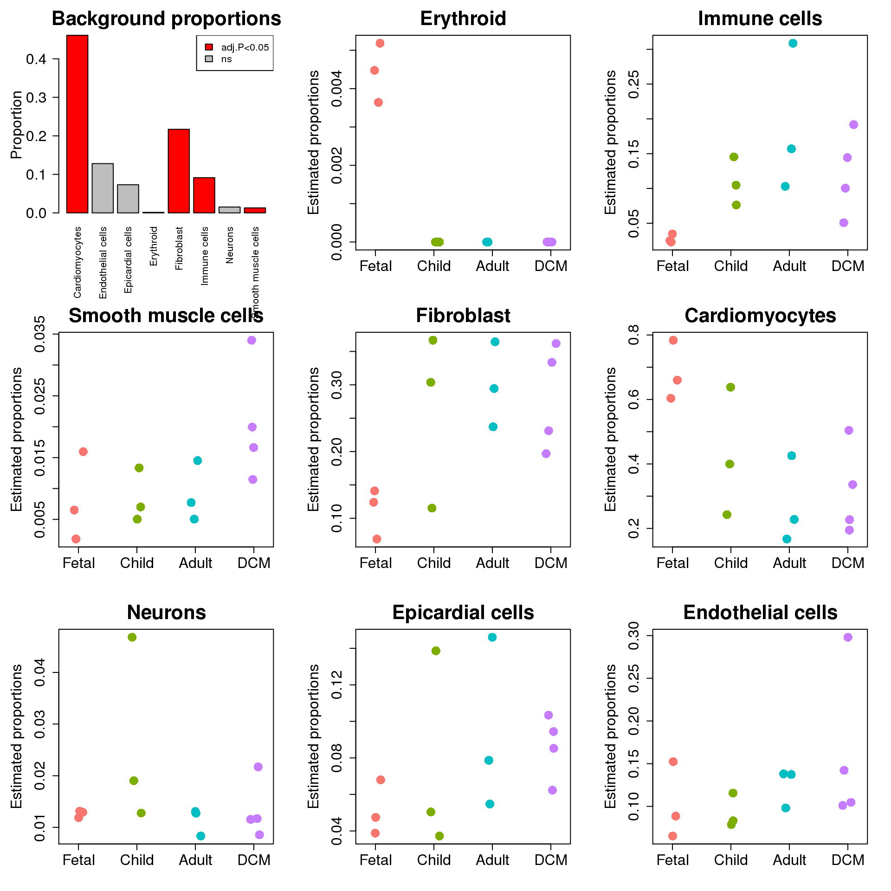
par(mar=c(8,5,3,2))
par(mfrow=c(3,3))
barplot(sort(table(allcells$Broad_celltype)/sum(table(allcells$Broad_celltype)),decreasing=TRUE),
las=2,main="Average proportions",ylab="Proportion",cex.lab=1.5,cex.axis=1.5,cex.main=2,
col=c(2,2,"grey",2,"grey","grey",2,2))
legend("topright",fill=c(2,"grey"),legend=c("adj.P<0.05","ns"),cex=1.5)
par(mar=c(4,5,3,2))
plot(jitter(as.numeric(targets$Group)),prop.rep$Proportions[sig.ct[1],],xaxt="n",xlab="",xlim=c(0.5,4.5),col=ggplotColors(4)[factor(targets$Group)],pch=c(8,16)[factor(targets$Sex)],cex=2,ylab="Estimated proportions",main=sig.ct[1],cex.axis=1.5,cex.lab=1.5,cex.main=2)
axis(side=1,at = 1:4, labels = levels(targets$Group),cex.axis=1.5)
legend("topright",legend=levels(factor(targets$Sex)),pch=c(8,16),cex=1.5)
for(i in 2:8){
plot(jitter(as.numeric(targets$Group)),prop.rep$Proportions[sig.ct[i],],xaxt="n",xlab="",xlim=c(0.5,4.5),col=ggplotColors(4)[factor(targets$Group)],pch=c(8,16)[factor(targets$Sex)],cex=2,ylab="Estimated proportions",main=sig.ct[i],cex.axis=1.5,cex.lab=1.5,cex.main=2)
axis(side=1,at = 1:4, labels = levels(targets$Group),cex.axis=1.5)
#legend("topleft",legend=levels(factor(targets$Sex)),pch=c(8,16),cex=1.5)
}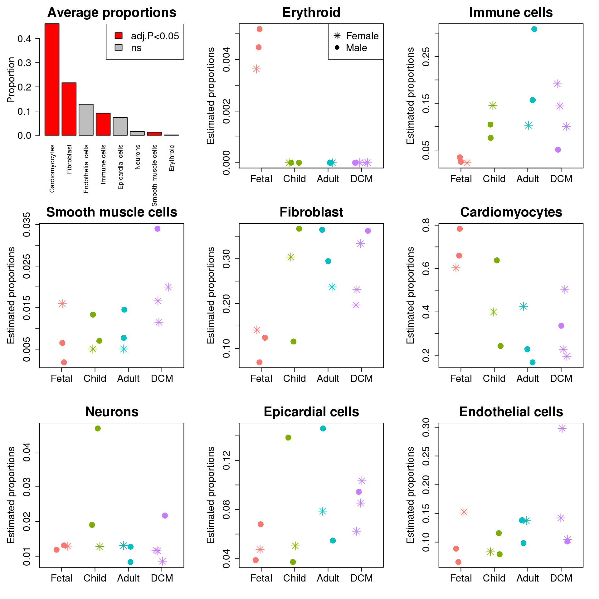
par(mfrow=c(1,2))
plot(jitter(as.numeric(targets$Group)),prop.rep$Proportions["Erythroid",],xaxt="n",xlab="",xlim=c(0.5,4.5),col=ggplotColors(4)[factor(targets$Group)],pch=c(8,16)[factor(targets$Sex)],cex=2,ylab="Estimated proportions",main="Erythroid",cex.axis=1.5,cex.lab=1.5,cex.main=2)
legend("topright",legend=levels(factor(targets$Sex)),pch=c(8,16),cex=1.5)
axis(side=1,at = 1:4, labels = levels(targets$Group),cex.axis=1.5)
plot(jitter(as.numeric(targets$Group)),prop.rep$Proportions["Immune cells",],xaxt="n",xlab="",xlim=c(0.5,4.5),col=ggplotColors(4)[factor(targets$Group)],pch=c(8,16)[factor(targets$Sex)],cex=2,ylab="Estimated proportions",main="Immune cells",cex.axis=1.5,cex.lab=1.5,cex.main=2)
axis(side=1,at = 1:4, labels = levels(targets$Group),cex.axis=1.5)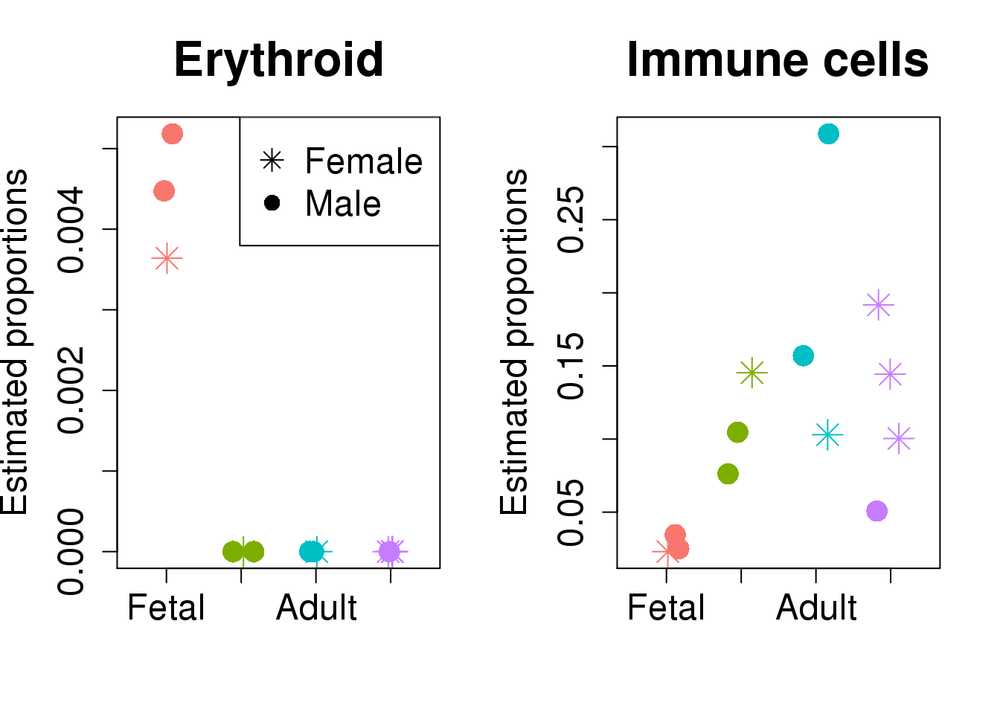
Save objects with new cluster annotation
#saveRDS(fetal.integrated, file="./output/RDataObjects/fetal-int.Rds")
#saveRDS(young.integrated, file="./output/RDataObjects/young-int.Rds")
#saveRDS(adult.integrated, file="./output/RDataObjects/adult-int.Rds")
#saveRDS(dcm.integrated, file="./output/RDataObjects/dcm-int.Rds")
sessionInfo()R version 3.6.0 (2019-04-26)
Platform: x86_64-pc-linux-gnu (64-bit)
Running under: CentOS release 6.7 (Final)
Matrix products: default
BLAS: /usr/local/installed/R/3.6.0/lib64/R/lib/libRblas.so
LAPACK: /usr/local/installed/R/3.6.0/lib64/R/lib/libRlapack.so
locale:
[1] LC_CTYPE=en_US.UTF-8 LC_NUMERIC=C
[3] LC_TIME=en_US.UTF-8 LC_COLLATE=en_US.UTF-8
[5] LC_MONETARY=en_US.UTF-8 LC_MESSAGES=en_US.UTF-8
[7] LC_PAPER=en_US.UTF-8 LC_NAME=C
[9] LC_ADDRESS=C LC_TELEPHONE=C
[11] LC_MEASUREMENT=en_US.UTF-8 LC_IDENTIFICATION=C
attached base packages:
[1] splines parallel stats4 stats graphics grDevices utils
[8] datasets methods base
other attached packages:
[1] dplyr_0.8.3 clustree_0.4.0
[3] ggraph_1.0.2 workflowr_1.3.0
[5] NMF_0.21.0 bigmemory_4.5.33
[7] cluster_2.1.0 rngtools_1.4
[9] pkgmaker_0.27 registry_0.5-1
[11] scran_1.12.0 SingleCellExperiment_1.6.0
[13] SummarizedExperiment_1.14.1 GenomicRanges_1.36.0
[15] GenomeInfoDb_1.20.0 DelayedArray_0.10.0
[17] BiocParallel_1.18.1 matrixStats_0.55.0
[19] cowplot_1.0.0 monocle_2.12.0
[21] DDRTree_0.1.5 irlba_2.3.3
[23] VGAM_1.1-1 ggplot2_3.2.1
[25] Matrix_1.2-17 Seurat_3.0.3.9019
[27] org.Hs.eg.db_3.8.2 AnnotationDbi_1.46.1
[29] IRanges_2.18.1 S4Vectors_0.22.0
[31] Biobase_2.44.0 BiocGenerics_0.30.0
[33] RColorBrewer_1.1-2 edgeR_3.26.3
[35] limma_3.40.2
loaded via a namespace (and not attached):
[1] reticulate_1.13 R.utils_2.9.0
[3] tidyselect_0.2.5 RSQLite_2.1.2
[5] htmlwidgets_1.5 grid_3.6.0
[7] combinat_0.0-8 docopt_0.6.1
[9] Rtsne_0.15 munsell_0.5.0
[11] codetools_0.2-16 ica_1.0-2
[13] statmod_1.4.30 future_1.14.0
[15] withr_2.1.2 colorspace_1.4-1
[17] fastICA_1.2-2 knitr_1.25
[19] ROCR_1.0-7 gbRd_0.4-11
[21] listenv_0.7.0 labeling_0.3
[23] Rdpack_0.11-0 git2r_0.26.1
[25] slam_0.1-45 GenomeInfoDbData_1.2.1
[27] polyclip_1.10-0 farver_1.1.0
[29] bit64_0.9-7 pheatmap_1.0.12
[31] rprojroot_1.3-2 vctrs_0.2.0
[33] xfun_0.10 R6_2.4.0
[35] doParallel_1.0.15 ggbeeswarm_0.6.0
[37] rsvd_1.0.2 locfit_1.5-9.1
[39] bitops_1.0-6 assertthat_0.2.1
[41] SDMTools_1.1-221.1 scales_1.0.0
[43] beeswarm_0.2.3 gtable_0.3.0
[45] npsurv_0.4-0 globals_0.12.4
[47] rlang_0.4.0 zeallot_0.1.0
[49] lazyeval_0.2.2 yaml_2.2.0
[51] reshape2_1.4.3 backports_1.1.5
[53] tools_3.6.0 gridBase_0.4-7
[55] gplots_3.0.1.1 dynamicTreeCut_1.63-1
[57] ggridges_0.5.1 Rcpp_1.0.2
[59] plyr_1.8.4 zlibbioc_1.30.0
[61] purrr_0.3.2 RCurl_1.95-4.12
[63] densityClust_0.3 pbapply_1.4-1
[65] viridis_0.5.1 zoo_1.8-6
[67] ggrepel_0.8.1 fs_1.3.1
[69] magrittr_1.5 data.table_1.12.4
[71] lmtest_0.9-37 RANN_2.6.1
[73] whisker_0.3-2 fitdistrplus_1.0-14
[75] lsei_1.2-0 evaluate_0.14
[77] xtable_1.8-4 sparsesvd_0.1-4
[79] gridExtra_2.3 HSMMSingleCell_1.4.0
[81] compiler_3.6.0 scater_1.12.2
[83] tibble_2.1.3 KernSmooth_2.23-15
[85] crayon_1.3.4 R.oo_1.22.0
[87] htmltools_0.4.0 tidyr_0.8.3
[89] DBI_1.0.0 tweenr_1.0.1
[91] MASS_7.3-51.4 R.methodsS3_1.7.1
[93] gdata_2.18.0 metap_1.1
[95] igraph_1.2.4.1 pkgconfig_2.0.3
[97] bigmemory.sri_0.1.3 plotly_4.9.0
[99] foreach_1.4.7 vipor_0.4.5
[101] dqrng_0.2.1 XVector_0.24.0
[103] bibtex_0.4.2 stringr_1.4.0
[105] digest_0.6.21 sctransform_0.2.0
[107] RcppAnnoy_0.0.12 tsne_0.1-3
[109] rmarkdown_1.14 DelayedMatrixStats_1.6.0
[111] gtools_3.8.1 nlme_3.1-141
[113] jsonlite_1.6 BiocNeighbors_1.2.0
[115] viridisLite_0.3.0 pillar_1.4.2
[117] lattice_0.20-38 httr_1.4.1
[119] survival_2.44-1.1 glue_1.3.1
[121] qlcMatrix_0.9.7 FNN_1.1.3
[123] png_0.1-7 iterators_1.0.12
[125] bit_1.1-14 ggforce_0.3.0
[127] stringi_1.4.3 blob_1.2.0
[129] BiocSingular_1.0.0 caTools_1.17.1.2
[131] memoise_1.1.0 future.apply_1.3.0
[133] ape_5.3